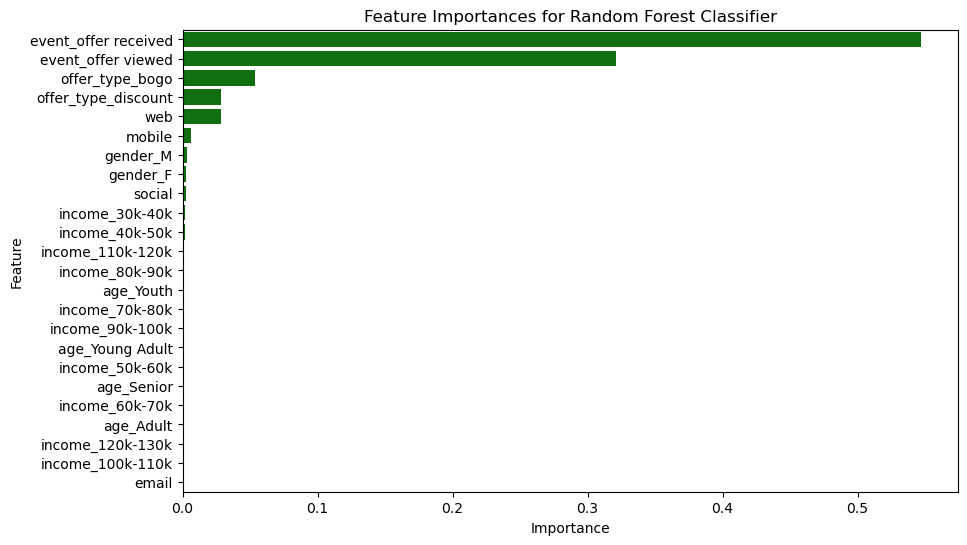

Starbucks Analysis

Starbucks has been using various marketing offers, such as Buy One Get One (BOGO), Discount, and Informational campaigns, to engage their customers. The dataset used for this analysis contains user interaction events with these offers, including when an offer was received, viewed, or completed. The goal of this analysis is to understand which demographics and channels are most effective in driving offer completions and to provide insights for optimizing future marketing strategies.
This data set contains simulated data that mimics customer behavior on the Starbucks rewards mobile app. Every few days, Starbucks sends out offers to users of the app, which can range from simple advertisements for drinks to more substantial offers like discounts or Buy One Get One Free (BOGO) promotions. Some users might receive offers regularly, while others may not receive any during certain weeks. Not all users receive the same offer, which presents a unique challenge for Starbucks.
The task is to determine which demographic groups respond best to each type of offer and how Starbucks can optimize the delivery of these offers to maximize user engagement. The data set represents a simplified version of the real Starbucks app, focusing on a single product, while the actual app has a wide variety of offerings.
Each offer has a validity period, which defines how long the customer can take advantage of it. For example, a BOGO offer may be valid for five days. Even informational offers have a validity period, allowing customers to be influenced by the information for a set number of days after receiving the offer.
The data includes transactional records, indicating the amount spent by users and the timing of each transaction, along with interactions with offers—such as when an offer was received, viewed, or completed. It’s important to note that users may make purchases without ever receiving or viewing an offer. Similarly, a user may receive an offer but not open it, yet still make a qualifying purchase during the offer period.
The primary challenge is to combine transactional, demographic, and offer data to determine which groups of people are most responsive to each type of offer and how to best present each offer. By understanding this, Starbucks can more effectively target different demographic groups through specific channels, ultimately optimizing marketing efforts and enhancing customer satisfaction.
Datasets
The analysis is based on three main datasets: Profile, Portfolio, and Transcript. Each dataset plays a crucial role in understanding user behavior, their response to offers, and the effectiveness of different types of marketing strategies. Below is a detailed description of each dataset:
Profile Dataset
The Profile dataset contains demographic information about users participating in the rewards program. It includes data for 17,000 users across five fields:
-
Gender: This variable is categorical and can take
values such as 'M', 'F', 'O', or
nullif the information is missing. Understanding user gender helps in identifying gender-specific preferences and tailoring targeted offers accordingly. -
Age: A numerical value representing the user's age.
Missing values are encoded as
118. Age is a significant factor for understanding generational behavior patterns in offer response. - ID: A unique identifier for each user, represented as a hashed string. This ID helps in linking users across the datasets.
-
Became Member On: The date when the user joined the
rewards program, given in
YYYYMMDDformat. This variable is helpful to understand how user engagement changes over time, depending on membership duration. - Income: The annual income of the user, represented as a numeric value. Income is an important factor in determining which types of offers resonate better with different socioeconomic segments.
Portfolio Dataset
The Portfolio dataset includes details of all the offers sent out during the 30-day test period. It contains data for 10 different offers across six fields:
- Reward: The monetary amount awarded if the user completes the offer's conditions.
-
Channels: A list indicating the different
communication channels used to deliver the offer. These can include
web,email,mobile, andsocial. Understanding which channels are most effective is essential for optimizing marketing strategies. - Difficulty: The monetary amount the user is required to spend to receive the reward. This is crucial for assessing user behavior under varying spending thresholds.
- Duration: The number of days the offer remains valid. This helps in analyzing the influence of offer validity period on user engagement.
-
Offer Type: The type of offer, which could be
bogo,discount, orinformational. This is a critical variable for comparing which types of offers work best for different demographics. - ID: A unique identifier for each offer, represented as a hashed string. This ID allows linking offer data with user interactions recorded in the transcript dataset.
Transcript Dataset
The Transcript dataset provides a detailed log of all events related to user interactions with the offers. It contains 306,648 records across four main fields:
- Person: A unique identifier for each user, represented as a hashed string. This allows linking with demographic data from the profile dataset.
-
Event: A string indicating the type of
interaction—such as
offer received,offer viewed,transaction, oroffer completed. This field helps track the complete journey of an offer and understand the conversion funnel. -
Value: A dictionary that holds various values
depending on the event type. It may contain
amount(for transaction events) orreward(for completed offers). This field is instrumental in tracking user spending and reward earnings. - Offer ID: The unique identifier for the offer involved in the interaction. It allows connecting specific events with the corresponding offer in the portfolio dataset.
-
Amount: The amount spent during a transaction,
applicable to
transactionevents. This helps in quantifying user spending behavior. - Reward: The reward received upon completing an offer. This field is key to understanding how users respond to incentives.
- Time: A numeric value indicating the number of hours since the start of the test. It provides a timeline for each user’s interactions, helping to understand the sequence of events.
Significance of Key Variables
The Profile dataset gives a deep insight into user demographics, which are crucial for understanding which groups are more responsive to each type of offer. For example, variables like age and income help segment users, enabling the identification of which age groups or income brackets respond best to specific offers.
The Portfolio dataset provides information about the characteristics of each offer, such as the type, reward, and communication channels used. This information is essential to analyze the performance of each offer and to understand which type of offers are more effective and through which channels.
The Transcript dataset logs the entire user interaction with each offer, allowing for a complete analysis of the user journey. The event field is particularly important for understanding how many users viewed an offer after receiving it and eventually completed it. This dataset also helps quantify spending behavior (amount field) and reward earnings (reward field).
By combining these datasets, we gain a holistic view of user behavior—from their demographic background to how they interact with offers. This integrated analysis enables us to answer critical questions regarding offer effectiveness, channel performance, and demographic preferences, ultimately guiding the development of a more targeted and effective marketing strategy for Starbucks.
Strategy for Solving the Problem
To tackle the problem of identifying which groups of people are most responsive to each type of offer and how best to present these offers, we employed a structured approach consisting of various stages, from project setup to modeling and evaluation. The methodology involved setting up a clear project structure, performing extensive exploratory data analysis (EDA), building a preprocessing pipeline, and finally applying machine learning techniques to create predictive models.

Overall Approach and Methodology
The overall approach began by organizing the project in a modular manner:
- Project Setup and Organization: The project was divided into different files and folders:
data/: Store the provided JSON files.-
notebooks/: Jupyter notebooks split by major phases, including EDA, preprocessing, and modeling. -
src/: Scripts for loading, preprocessing, and modeling functions. -
README.md: Outlines the purpose, approach, and setup instructions. requirements.txt: For project dependencies.- Initial Steps: Load the JSON files and conduct a preliminary overview to understand the basic structure, relationships, and any missing data in the datasets. This phase also involved setting up a notebook template with sections for project definition, analysis, methodology, and results.
- Project Definition: Formulated a clear problem statement about optimizing offer targeting by demographic groups, defined key metrics such as response rate and engagement rate, and justified these metrics in relation to the project's goals.
- Data Analysis and Exploration: We conducted an exploratory data analysis (EDA) to understand the relationships in the data. We explored demographics, offer details, and user interaction sequences, which allowed us to perform feature engineering, such as calculating days_since_signup and spending_category. This stage involved extensive visualizations to identify correlations between demographics, offer types, and engagement patterns.
- Preprocessing Pipeline: We merged the datasets to create a comprehensive dataset of user interactions, handled missing values, and encoded categorical variables like offer_type and gender using one-hot encoding. We also engineered additional features such as total_spent_during_offer and viewed_offer_before_purchase.
- Modeling: We trained initial models on preprocessed data to predict whether users would respond to an offer. We used a Random Forest Classifier, starting with a basic heuristic or rule-based model as a baseline, and iteratively refined it by adding more complex features and hyperparameter tuning. Alternative models such as logistic regression and gradient boosting were also tested and compared.
Discussion of the Expected Solution
The proposed solution integrates several components that work together to address the problem effectively:
Overall Architecture or Workflow
The project follows a well-defined workflow that integrates data preprocessing, feature engineering, modeling, and evaluation stages:
- Data Preprocessing: This step involved preparing and cleaning the data by handling missing values, encoding categorical variables, and engineering features. These preprocessed data were then merged to create a unified dataset that captured user, offer, and interaction details comprehensively.
- Modeling: We aimed to train a Random Forest Classifier model capable of predicting which demographic groups would be most responsive to each type of offer and the optimal channels to reach them. The model was chosen for its robustness in handling a mix of feature types and its capability to manage complex interactions between variables. Additionally, we used GridSearchCV for hyperparameter tuning to optimize model performance.
- Evaluation: Model evaluation was done using metrics like accuracy, precision, recall, and F1-score. These metrics helped us understand the model's effectiveness in predicting offer completions. The evaluation results were visualized using feature importance plots, confusion matrices, and ROC curves to interpret the model's behavior and identify areas for improvement.
- Received-to-View Rate: 74.98% of users who received an offer viewed it.
- View-to-Completion Rate: 65.07% of users who viewed an offer went on to complete it.
- Overall Completion Rate: 48.79% of users who received an offer eventually completed it.
- Most Important Factors: The features event_offer received and event_offer viewed were the most important predictors of offer completion.
- Channel Effectiveness: The web channel was the most effective in driving offer completions, followed by mobile and email.
- Demographic Insights: Younger users (categorized as 'Youth' and 'Young Adults') were more likely to view and complete offers, suggesting targeted marketing efforts may be more effective for this group.
Exploratory Data Analysis (EDA) Insights
During our initial exploratory data analysis, we calculated several metrics to evaluate user interactions with offers. These metrics included:
The results highlight a strong engagement from users after viewing offers. However, improving the Received-to-View Rate and the View-to-Completion Rate could significantly boost overall completion.
Modeling Approach
To predict which users are most likely to complete an offer, we built a Random Forest Classifier. The model was fine-tuned using GridSearchCV, which helped in identifying the best hyperparameters. After careful evaluation, the final model achieved an accuracy of 91% on the test set. The feature importance plot below highlights which variables had the most impact on offer completion.
Figure 1 – Feature Importance
Evaluation Results
The confusion matrix and ROC curve below provide additional insights into the model's performance. The model showed a strong ability to predict users who would not complete an offer (precision: 90%, recall: 100% for class 0), but there is room for improvement in identifying users who will complete an offer.

Figure 2 – Confusion Matrix

Figure 3 – ROC Curve
Key Findings
Our analysis reveals the following key findings regarding user engagement and offer responses:
Challenges and Recommendations
One challenge encountered was offer response attribution. Determining which channels and offer types had the most influence on user decisions can be complex, as many users engage through multiple channels. The importance of accurately attributing offer responses cannot be understated, especially for optimizing marketing budgets.
Improvement Ideas: Future improvements could include incorporating additional data, such as user location or seasonality, to gain deeper insights. Additionally, further analysis into different channel combinations might reveal synergies that could drive higher engagement.